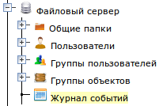
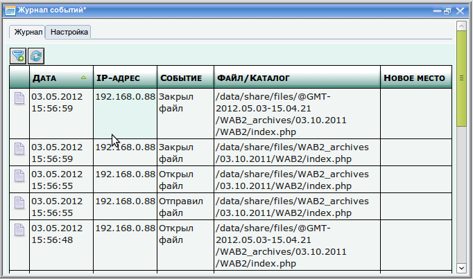

После того как вы включили нужные папки в журнал событий, сам журнал можно увидеть, развернув в дереве узел "Файловый сервер" и запустив подраздел "Журнал событий".


Окно журнала состоит из двух закладок: закладка "Журнал", на которой, собственно расположен журнал и закладка "Настройка", на которой указываются параметры, необходимые для того, чтобы журнал событий работал.
Поля "Тип события" и "IP-адрес" требуют точного указания типа события и IP-адреса, а поля "Файл/каталог" и "Новое место" допускают использовать символ подстановки "*", который означает "любой символ". Например, если указать в поле "Файл/каталог" выражение /data/share/files/дог*, то будут отбираться все записи журнала, у которых имя файла или каталога, с которым произошло событие начинается на /data/share/дог. Или если указать выражение *.txt, то будут отбираться все записи, в которых имя файла заканчивается на .txt, а если указать *оро*, то будут отбираться все записи, у которых имя файла содержит сочетание букв "оро".
Параметры журнала событий находятся на закладке "Настройки" окна "Журнала событий".